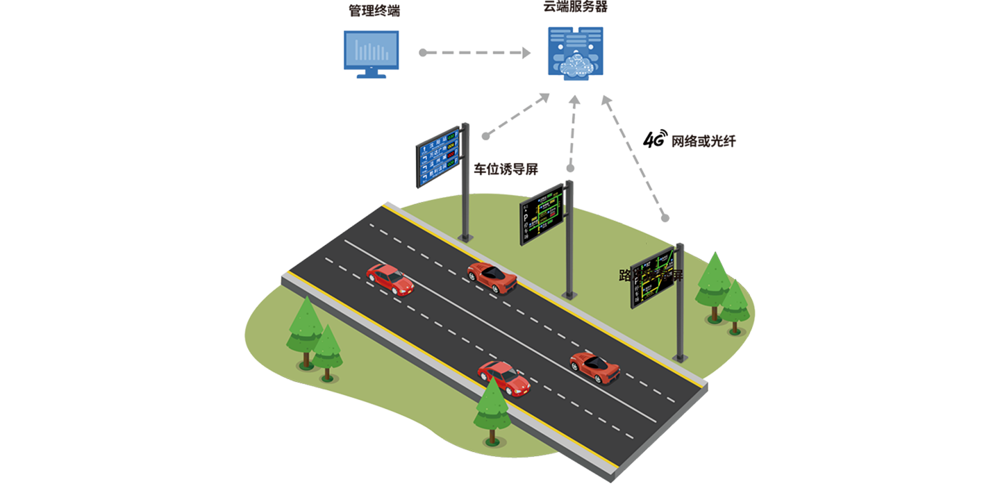

<div id="body">
  <div class="main-picture">
    <div class="content">
      <div class="title"><span>城市交通</span>诱导系统</div>
      <div class="english">SYSTEM</div>
    </div>
  </div>
  <div class="main-content">
    <div class="content">
      
      <div class="system-text1">城市交通诱导系统是交通数据面向车主发布的终端系统，展示终端主要是安装在道路上方的户外诱导LED显示屏上，
        车主在道路上行驶的时候可以通过诱导屏了解前方道路的实时路况以及前方区域的实时剩余车位数情况，以便合理安排行程、避免拥堵。
      </div>
      
      <div class="system-text2">城市交通诱导系统所使用的路况数据可由交通部门提供，也可以从专业采集路况数据的第三方公司采购。城市交通诱导系统
        所 使用的车位数据一般由城市智慧停车平台提供，如果没有城市智慧停车平台则需要逐家停车场进行对接。城市交通诱导系统预留了相应的数据对接模块。
      </div>
    </div>
  </div>
</div>

